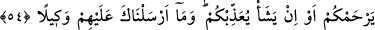

SÖZÜN EN GÜZELİNİ
SÖYLESİNLER
53. Kullarıma söyle, sözün en güzelini söylesinler. Sonra şeytan aralarını bozar.
Çünkü şeytan, insanın apaçık düşmanıdır.
54. Rabbiniz, sizi en iyi bilendir. Dilerse size merhamet eder; dilerse sizi
cezalandırır. Biz, seni onların üstüne bir vekil olarak göndermedik.
55. Rabbin, göklerde ve yerde olan herkesi en iyi bilendir. Gerçekten biz,
peygamberlerin kimini kiminden üstün kıldık; Davud’a da Zebur’u verdik.
Ey Muhammed! Mü’min “kullarıma söyle” müşriklerle tartıştıklarında “sözün en
güzelini söylesinler.” Onlarla sert ve haşin konuşmasınlar. Nitekim Allah Teâlâ: “Ehl-i
kitapla ancak en iyi tarzda mücâdele edin.” (el-Ankebût, 29/46) buyurur.
et-Te’vîlâtü’n-Necmiyye’de şöyle der: Burada Allah’ın kullarından bir kısmının
Allah’ın zâtına izâfe edilerek şereflendirilmeleri, onlar hakkında inâyet nazarının
te’sirine sebep olacağına işârettir. Bu yüzden onlardan en güzel söz, en güzel fiil ve en
güzel ahlâk sâdır olur. En güzel söz, samimiyetle “Lâ ilahe illallah” diyerek Allah
Teâlâ’ya duâ etmektir. En güzel fiil, hakikat âlemine yönelik olarak şeriat kanununa ve
tarîkat âdâbına uygun olan fiildir. En güzel ahlâk ise Allah hakkında O’nu talebde ihsân
üzere yüzünü/kendini Allah’a teslim etmektir. Kullarla ilgili olarak ise hiçbir ihsan ve
teşekkür beklemeksizin insanlara iyilikte bulunmak, insanların kendisine yaptığı
kötülükleri bağışlamak, insanlar arasında onlara nasihat ederek yaşamak, sert
davranmadan iyiliği emretmek ve küçük düşürmeden kötülüğü yasaklamaktır.
“Sonra şeytan aralarını bozar.” Araplar bir kimse insanlar arasında fesad çıkarıp
onları aldattığında, vesvese verdiğinde ‘nezeğa’ fiilini kullanırlar. Yâni şeytan fesad
çıkarır, kötülüğe ve kendi aralarında tartışmaya teşvik eder. Belki de aralarındaki
sertlik onları inatlaşmaya ve fesâdın artmasına götürür.
et-Te’vîlât’ta der ki: “İnsanlar birbirlerine nasihat ederek yaşamadıkları zaman
“şeytan aralarını bozar.” Şu halde nasihat konusunda her zamanın akıllı kimselerinin
sahâbe gibi olmaları gerekir. Çünkü sahâbenin hâlleri ve kendi zamanlarındaki